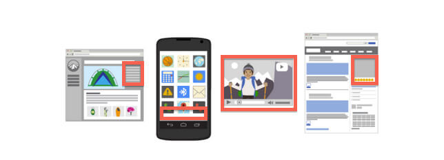
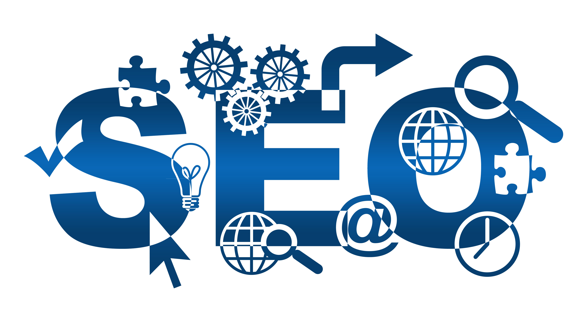

دورات تسويق الكتروني | الدبلوم الاحترافي فى التسويق الالكتروني:
دبلوم التسويق الالكتروني هو الدورة الأكثر احترافا من دورات التسويق الالكتروني التى تقدمها شركة البوابه الرقمية | Digital Gate حيث أنه يحتوى على خمسة دورات تدريبية كاملة متخصصة فى مجال التسويق الالكتروني تمثل خلاصة أفضل دورات التسويق الالكتروني المتخصصة فى أكبر الجامعات عالميا وأفضل معاهد التسويق الالكتروني المتخصصة على مستوى العالم يتم تدريبه بيد أفضل كفاءات التدريب العربية لتحول الفرد من شخص عادى إلى أخصائي تسويق الكتروني محترف على دراية بجميع فروع وتخصصات علم التسويق الالكتروني.
يتكون هذا الدبلوم من مجموعة الدورات التالية:
-
أولا: دورة أخصائى مواقع التواصل الإجتماعي :
إن دورة أخصائى مواقع التواصل الإجتماعي لا تشرح شبكات التواصل الاجتماعي بشكل بسيط وسطحي, وإنما تتناول مواقع التواصل الاجتماعي بشكل احترافي وموضوعي ناتج عن تحليل ودراسة سلوك المستخدم العربي في منطقة الخليج العربى خاصة وفى منطقة الشرق الأوسط بوجه عام، يصبح المتدرب بعدها قادرا على كيفية التعامل والتسويق عبر شبكات التواصل الاجتماعي كل شبكة على حدى وبطريقة منفصلة تماما عن الشبكات الأخرى، وقادرا على بناء ملف تعريف احترافي للشركة التى يعمل بها على كل منصة من منصات التواصل الإجتماعي, وقادرا على فهم طبيعة الجمهور الخاص بكل منصة وكيفية مخاطبته وصياغة الرسالة التسويقية الموجهه اليه من خلال هذه المنصة, وقادرا على استخدام جميع أدوات وتقنيات جميع هذه المنصات التى لا ينتبه إليها الكثيرون من المستخدمين العاديين وبطريقة احترافيه هذا بالإضافة إلى العديد من المهارات الإحترافية المتعلقة بتقنيات التسويق عبر مواقع التواصل الاجتماعي (Social Media).
يستطيع المتدرب من خلال هذه الدوره اكتساب مهارات احترافية واستثنائية، تمثل خلاصة دراساتنا وتجاربنا، تحوله من مستخدم عادي إلى شخص محترف وعلى علم بأحدث التقنيات المستخدمة في التسويق عبر مواقع التواصل الاجتماعي مستخدما فى ذلك أحدث تقنيات واساليب كتابة المحتوى (Content) واستراتيجيات التسويق الضمنى الداخلي (Inbound Marketing).
تركز وتهتم هذه الدوره بترسيخ مفهوم التسويق الضمنى لدى المتدريبين ومساعدتهم على تطوير مهاراتهم فى كتابة محتوى إبداعى متميز ومتطور وتطوير مهاراتهم فى استخدام الأدوات والوسائل التى توفرها مواقع التواصل الإجتماعي فى التسويق الالكتروني.
هذه الدوره وحدها تؤهل المتدرب للحصول على وظيفة أخصائى إدارة حسابات مواقع التواصل الإجتماعي للشركات والمؤسسات وتدربه على استغلال إمكانات منصات التواصل الإجتماعى للتسويق الالكتروني للمنتجات والخدمات الخاصة به أو بشركته أو بمؤسسته وزياده شهرتها وتساهم أيضا فى بناء ونشر وتعزيز الاسم التجارى والعلامه التجارية لشركته ورسم الصورة الذهنيه لشركته باحترافيه فى أذهان جمهور الشركة المستهدف مع كسب ولائه وانتمائه للعلامة التجارية.
-
ثانيا: دورة إدارة الحملات الإعلانية المدفوعة:
تهتم دورة احتراف إدارة الحملات الاعلانية بشرح أهم أنواع الحملات الاعلانية المستخدمة فى مجال التسويق الالكتروني سواء كانت الحملات الاعلانية على مواقع التواصل الاجتماعي مثل إعلانات تويتر Twitter Ads, واعلانات إنستاجرام Instagram Ads, واعلانات الفيسبوك Facebook Ads, واعلانات لينكد ان Linked In Ads أو الحملات الاعلانية للظهور فى نتائج البحث بمحركات البحث (Google Search) أو الحملات الاعلانية للبنر الدعائى على المواقع الشهيرة (GDN) أو حملات الفيديو الدعائى على اليوتيوب.
تعتمد الحملات الاعلانية على مواقع التواصل الاجتماعي على العدد الكبير من المستخدمين المشتركين في تلك الشبكات فى القيام بعمل حملات اعلانية للمعلنين, وقد تتم عملية الاستهداف بناء على التوزيع الديموغرافي أو العمر أو النوع أو الوظيفة أو الإهتمامات أو العديد من عوامل الإختيار الأخرى فنظرا لطبيعة البيانات التي تطلبها هذه الشبكات الاجتماعية من المستخدم عند التسجيل أو لطبيعة استخدامه لها، فإن المعلن يكون قادرا على تحديد الفئة المستهدفة بدقة عالية لكى تكون مناسبة لطبيعة نشاطه فتظهر إعلاناته لهذه الفئة بالتحديد.
تعتمد الحملات الاعلانية للظهور فى نتائج البحث بمحرك البحث جوجل (Google Search) على العدد الكبير من المستخدمين المتواجدين يوميا على محركات البحث ويقومون بملايين عمليات البحث يوميا للحصول على معلومات عن منتج أو خدمة أو شركة أو موقع ... الخ وذلك فى عمل ونشر حملات اعلانية للظهور بالنتائج الأولى فى نتائج البحث ويعتبر هذا النوع من أهم أنواع الحملات الاعلانية على الإطلاق وأهم ما يميز هذا النوع من الحملات الاعلانية هو أن المستخدم لديه بالفعل الحاجة والرغبه فى المنتج أو الخدمة ويبحث عنه بالفعل ويبحث بالفعل عن الشركة التى تقوم باشباع هذه الرغبة لديه ويعتبر الظهور للمستخدم فى هذه اللحظه مهما بالنسبه للكثير من الشركات حيث أن العميل غالبا ما يكون فى هذه اللحظة على وشك اتخاذ قرار الشراء, وقد تتم عملية الاستهداف فى هذا النوع بناء على التوزيع الديموغرافي ويتم التحكم فى اظهار الاعلان دول أو مدن أو مناطق بعينها.
تعتمد الحملات الاعلانية للظهور على المواقع الشهيرة (حملات البنر الدعائي) GDN على ظهور البنر الاعلاني للمعلن فى المواقع الشهيرة التى يرتادها الملايين من مستخدمى الإنترنت بشكل يومى ومستمر وتحقق عدد كبير جدا من الزوار مثل المواقع الالكترونية للجرائد الشهيرة أو الرسمية مثلا (جرائد الرياض والجزيره وعكاظ ... الخ على سبيل المثال) ويعتبر ظهور البنر الإعلاني للشركة فى هذه المواقع ذات الإقبال الشديد من الأدوات القوية فى نشر وإشهار الإسم التجارى والعلامه التجارية بين الجمهور وهو ما يطلق عليه فى علم التسويق (Branding).
ويلاحظ أنه من خلال هذا النوع من الحملات يتم التحكم فى اختيار المواقع التى يظهر عليها الاعلان ويتم التحكم أيضا فى الدول والمدن والمناطق التى يظهر لمستخدميها هذا الاعلان.
تعتمد حملات الفيديو الاعلانية على موقع اليوتيوب على ظهور الفيديو الاعلاني للمعلن أثناء وفى بداية عرض مقاطع الفيديو للمستخدمين على القنوات فى اليوتيوب (YouTube) ويستخدم هذا النوع من الحملات الاعلانية وفقا لطبيعة المنتج أو الخدمة أو الجمهور المستهدف ويعتبر هذا النوع من الأدوات القوية فى نشر واشهار المنتجات والخدمات وزيادة انتشار الإسم التجارى والعلامه التجارية بين الجمهور وهو ما يطلق عليه فى علم التسويق (Branding). -
ثالثا: دورة فن وأسرار صناعة المحتوى (Content Secrets):
االمحتوى هو الملك (Content is The King) وهذه الحقيقة تفرض نفسها على كل من يعمل فى مجال التسويق الالكتروني, حيث أن المحتوي يمثل العقبة الكبرى التى تقف فى وجه جميع المسوقين ويقف الجميع أمامها حائرا, فالمحتوى هو الوقود الذى تسير به قاطرة التسويق الالكتروني, وليس المقصود من المحتوى المعنى المجرد للكلمه ولكن يقصد به ماده جذابه تخاطب القلب والعقل وتخطف لب الجمهور وتدفعه لقرائتها حتى آخر سطر وتحقق أكبر قدر ممكن من التفاعل وأعلى نسب مبيعات وتقرأها محركات البحث فتجبرها على احترام موقعك والاهتمام به وعلى رفع ترتيبه فى نتائج البحث بين المنافسين.
دورة فن وأسرار صناعة المحتوى (Content Secrets) تعتبر من أقوى وأهم دورات التسويق الالكتروني التى لا غنى عنها لأى مسوق الكتروني محترف, فهو من أهم الأدوات التى تمكنه من الوصول للجمهور المستهدف وعمل علاقه معه وكسب ولائه وانتمائه.
-
رابعا: دورة تقنيات محركات البحث | SEO:
دورة تقنيات محركات البحث SEO هى دوره متقدمة تعنى بشرح تقنيات عمل محركات البحث وكيف ترى محركات البحث موقعك وكيف تتعرف عليه وعلى محتوياته وكيف تقوم بتصنيفه وفهرسته وإظهاره فى نتائج البحث الأولى وبالتالى فإن أهمية هذه الدورة فى كيفية اظهار موقعك الالكتروني فى الصفحة الاولى من نتائج البحث لمحركات البحث دون الحاجة الى الحملات الاعلانية المدفوعة.
يعتبر علم تقنيات محركات البحث (SEO)الآن من أسرع العلوم تقلبا وتغيرا فى مجال التسويق الالكتروني فقد أصبحت محركات البحث الشهيرة وخاصة جوجل تقوم بعمل تحديثات دورية شهريا تسعى بها إلى تطوير وتحسين آداء لوغاريتمات محركات البحث Google Algorisms مما يترتب عليه ضرورة الإلمام بصفه مستمره بهذه التحديثات ليصبح موقعك الالكتروني قادرا على الصمود ضد المنافسه الشديدة والبقاء باستمرار فى الصفحة الأولى والنتائج الأولى بنتائج البحث SERP. -
خامسا: دورة خطط واستراتيجيات التسويق الالكتروني:
خطة التسويق الالكتروني هى الخطوة الأولى وهى حجر الأساس فى عملية التسويق الالكتروني الصحيحة فإذا أردت أن تقومبحملة تسويق الكتروني صحيحة فيجب عليك أولا أن تعد خطة تسويق الكتروني قوية وصحيحة مبنية على أسس علمية ودراسة فعلية وتحدد بها الأهداف التسويقية بوضوح.
فى مجال التسويق الالكتروني أنت بحاجة دائمة ومستمرة إلى توضيح وتقييم وضعك الحالى وما الذى تريد تحقيقه وما هى الأدوات والموارد والآلية التى سوف تستخدمها لتحقيق ذلك وتحتاج أيضا إلى تحديد الوقت المستغرق فى سبيل الوصول إلى هذا الهدف وتحقيقه وتحتاج إلى حدوث تناسق وتوافق بين الأدوات التسويقة المختلفة لتحقيق الهدف العام للشركة ولعملية التسويق الالكتروني, كما تشمل خطة التسويق الالكتروني أيضا على تحديد طبيعة الجمهور المستهدف وكيفية الوصول إليهم وكيفية صياغة الرسالة التسويقية التى يجب توجيهها إليهم والأهداف التفصيلية للقنوات التسويقية المختلفه وتحتوى خطة التسويق الالكتروني أيضا على تحليل لأهم المنافسين على الإنترنت وتحليل لنقاط القوة والضعف لديهم ولدى الشركة وعلى أهم الأدوات التسويقية المطلوب استخدامها وأهم القنوات التسويقية التى يجب إستخدامها والتى تناسب طبيعة الجمهور المستهدف وكذلك تحدد أهم الاستراتيجيات التسويقية المطلوب استخدامها للوصول لهذا الجمهور.
كل ما سبق بالإضافة للعديد من الأدوات الإحترافية الفريدة الإخرى التى توفرها الشركة ويشملها الدبلوم الاحترافي فى التسويق الالكتروني.
بادر بحجز مقعدك واتصل الآن لتصبح مسوق الكتروني محترف على دراية بأحدث علوم التسويق الالكتروني.
-
مميزات الدبلوم الاحترافي فى التسويق الالكتروني:
- يقضى المتدرب أثناء دراسة دبلوم التسويق الالكتروني عامًا دراسيًا كاملاً يحتوى على مائة وستون ساعة تدريبية (خمسة شهور) مليئة بكم كبير جدا من الخبرات العلمية والعملية التطبيقية, ويقوم بتنفيذها وتطبيقها بنفسه على مشروعه الخاص.
- لكل متدرب مشروعه الخاص به ويقوم باختياره بنفسه وتتكفل شركة البوابة الرقمية | Digital Gate بتوفير الموقع الالكتروني لهذا المشروع على الإنترنت (دومين + استضافة) حيث يقوم المتدرب بتطبيق كل ما تعلمه خلال مدة الدراسة على هذا المشروع.
- يتم توفير جهاز خاص لكل متدرب ليقوم بالتطبيق العملي عليه أثناء فترة التدريب.
- (التخصص) - فخلال مدة دراسة دبلوم التسويق الالكتروني بالكامل يتم التركيز فقط على محتوى الدبلوم الاحترافي فى التسويق الالكتروني مع البعد عن مناقشة أى تفاصيل أخرى وذلك بهدف حصول المتدرب على أقصى أستفادة ممكنة خلال فترة الدراسة.
- توافر العديد والعديد من ورش العمل خلال وبعد انتهاء مدة الدبلوم لاتاحة الفرصة للمتدربين للتطبيق العملى والممارسة العملية ولإتاحة تبادل الخبرات بين جميع المتدربين وتكون ورش العمل مقسمة وفقا لجدول المحاضرات لتغطية كافة موضوعات الدورة التدريبية.
- يحصل المتدرب على تسجيل للمحاضرة أو على المادة التدريبية فيديو بعد إنتهاء الدورة للرجوع إليها عند الحاجة.
- يتمتع المتدرب بخدمات الدعم الفني المجانية بعد انتهاء مدة الدورة وذلك من خلال إشتراك المتدرب فى جروب الدعم الفنى الخاص بمتدربى الشركة لحل أى مشكلة قد تصادفه بعد انتهاء فترة التدريب وللإجابه عن اسئلته والرد على استفساراته وإمداده بكل ما هو جديد فى مجال التسويق الالكتروني وكذلك لمد جسور الترابط والتعاون بين المتدربين.
- يتم توثيق الشهادة الكترونيا على الموقع الالكتروني الخاص بالشركة حيث يكون متاحا للشركات التأكد من مصداقية حصوله على الدوره من خلال مدربينا المعتمدين من أشهر الجامعات فى هذا المجال.
- يتم ترشيح الأفراد المميزين خلال الدورات وخلال مشاريع التخرج للعمل لدى كبرى الشركات التى تطلب متخصصين محترفين تدربوا من خلالنا.
- يحصل المتدرب على شهادة بإجتيازه الدورة التدريبية تؤهله للعمل كمسوق الكتروني محترف ويمكن لأى شركة الإستعلام عن مدى صحتها من خلال موقع الشركة الالكتروني.

-
الفئة المستهدفة للمتدربين فى الدبلوم الاحترافي فى التسويق الالكتروني:
- رجال الأعمال وأصحاب الشركات أوالمؤسسات المهتمين بتنمية وتطوير أعمالهم بإستخدام التسويق الالكتروني.
- رجال الأعمال وأصحاب الشركات أوالمؤسسات الذين يرغبون فى العمل فى مجال التسويق الالكتروني بطريقة إحترافية.
- فريق العمل والمدراء فى إدارات التسويق والتسويق الالكتروني من كافة المستويات، لبناء العلامات التجارية للشركات من خلال التسويق الضمنى الداخلي (Inbound Marketing).
- فريق العمل والمدراء فى إدارة المبيعات للاعتماد على شبكات التواصل الإجتماعي كأسواق لجلب عملاء.
- فريق العمل والمدراء فى إدارة العلاقات العامة لبناء علاقات قوية مع عملاء الشركة ويرغبون بدعم ولاء العملاء للشركة ولعلامتها التجارية.
- أفراد فريق خدمة العملاء في أي شركة لزيادة قدرتهم على لحل مشاكل العملاء بطريقة حديثه احترافية.
- الأشخاص اللذين لديهم شخصية إدارية وعندهم القدرة على الإدارة.
- مدراء المواقع الالكترونية لمساعدتهم على جلب زوار لمواقعهم الالكترونية فور تنفيذ الحملات الاعلانية الالكترونية.
- من يعمل فى مجال التسويق الالكتروني بالفعل ويريد أن يتوسع فى المجال ويعمل بطريقة إحترافية مدروسه بعيدة عن العشوائية وسياسة المحاولة.
- من يريد تغيير عمله وأن يعمل أختصاصى حملات اعلانية مدفوعة.
- الأشخاص اللذين يريدون العمل من المنزل والربح من الإنترنت وزيادة الدخل بينما يقضون أوقاتًا ممتعة.
- الأشخاص الذين يبحثون عن فرصة عمل أو عمل إضافى تدر دخل وفير.
- الأشخاص المبدعون فى طريقة تفكيرهم ويتميزون بالتفكير خارج الصندوق.
-
أهداف الدبلوم الاحترافي فى التسويق الالكتروني:
- تأهيل المسوق الالكتروني ليصبح قادرا على معرفة وتحديد النمط التسويقي والاستراتيجيات التسويقية له على الإنترنت.
- تأهيل المسوق الالكتروني ليصبح قادرا على معرفة الأدوات والبرامج التي يحتاج اليها فى عمله فى مجال التسويق الالكتروني وكيفية العثور عليها على الانترنت.
- تأهيل المسوق الالكتروني ليصبح قادرا على وضع خطة تسويق الكتروني كاملة وكيفية تطبيقها خلال جدول زمني محدد.
- تأهيل المسوق الالكتروني ليصبح قادرا على تحليل أي موقع الكتروني على الإنترنت ومعرفة نقاط قوته ومواطن ضعفه.
- تأهيل المسوق الالكتروني ليصبح قادرا على عمل بحث وتحليل للكلمات المفتاحية (Keyword Research) وقادرا على تقديم التوصيات المناسبة للعملاء.
- تأهيل المسوق الالكتروني ليصبح قادرا على استهداف الكلمات المفتاحية (Keyword Research) المناسبة ليظهر بها موقعه سريعًا في نتائج البحث.
- تأهيل المسوق الالكتروني ليصبح قادرا على عمل تهيئة داخلية للموقع الالكتروني (On Page SEO) وعمل تهيئة خارجية للموقع الالكتروني (Off Page SEO) بشكل صحيح واحترافى.
- تأهيل المسوق الالكتروني ليصبح قادرا على معرفة الطرق الصحيحة لعمل وبناء الروابط الخلفية (Back Links) بطريقة احترافية تساعد فى رفع ترتيب الموقع الالكتروني فى نتائج البحث في وقت قصير ولا تعرض موقعك الالكتروني لمخاطر عقوبات محركات البحث والحجب من نتائج البحث.
- تأهيل المسوق الالكتروني ليصبح قادرا على معرفة التطورات التي تحدث على الموقع الالكترونية وقادرا على تحليل كل مرحلة.
- تأهيل المسوق الالكتروني بهدف الإستفادة من الأدوات والإمكانات التى يوفرها التسويق الالكتروني فى تحقيق الإنتشار وزيادة قاعدة العملاء والعمل على خدمتهم بطريقة إحترافية وفعالة وزيادة ولائهم وإنتمائهم للعلامة التجارية للشركة.
مدة الدورة:
(160) ساعة تدريبية.
انتهز الفرصة ولا تتردد واتصل الآن وإبدأ عملك فى عالم التسويق الالكتروني السحرى باحترافية ولتصبح قادرا على العمل والتعامل مع جميع أفرع ومجالات التسويق الإلكتروني باحترافية.